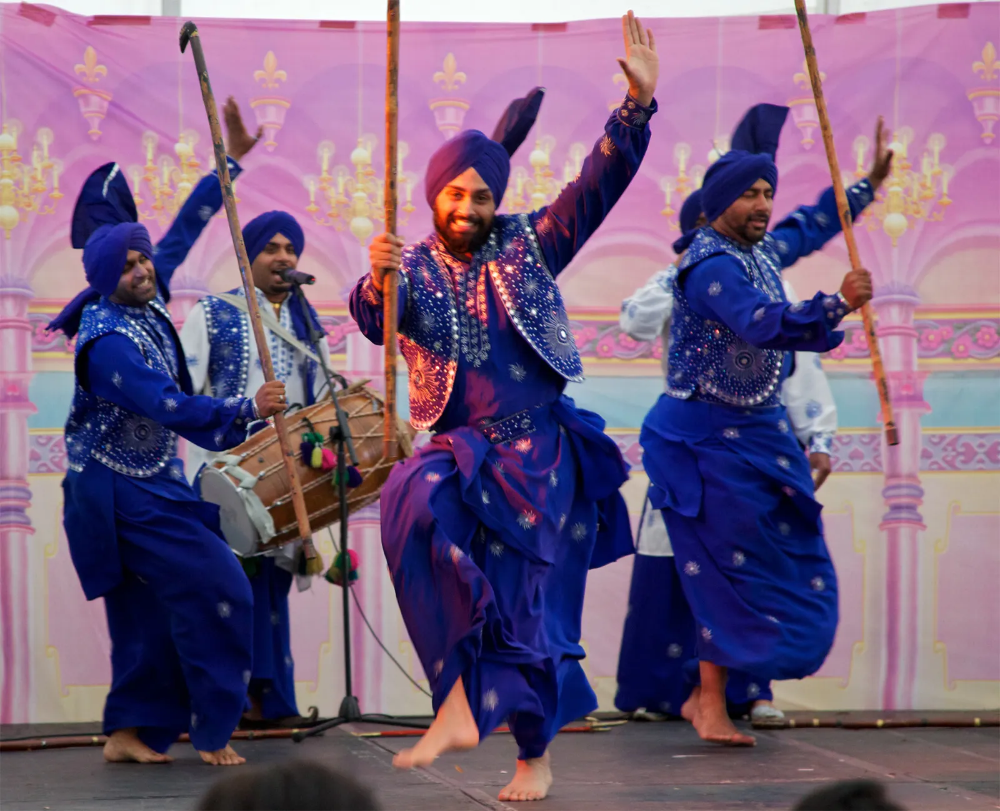

Hi my name is Shiza Abbasi. I have many Hobbies which are listed below:
- Painting
- Cooking
- Sleeping
- Book reading
- Dancing
Painting
Painting is a visual art, which is characterized by the practice of applying paint, pigment, color or other medium to a solid surface. The medium is commonly applied to the base with a brush, but other implements, such as knives, sponges, and airbrushes, may be used. One who produces paintings is called a painter.
Cooking
Cooking, also known as cookery or professionally as the culinary arts, is the art, science and craft of using heat to make food more palatable, digestible, nutritious, or safe. Cooking techniques and ingredients vary widely, from grilling food over an open fire, to using electric stoves, to baking in various types of ovens, reflecting local conditions. Cooking is an aspect of all human societies and a cultural universal.

Sleeping
Sleep is a state of reduced mental and physical activity in which consciousness is altered and certain sensory activity is inhibited. During sleep, there is a marked decrease in muscle activity and interactions with the surrounding environment. While sleep differs from wakefulness in terms of the ability to react to stimuli, it still involves active brain patterns, making it more reactive than a coma or disorders of consciousness.

Book reading
Reading is the process of taking in the sense or meaning of symbols, often specifically those of a written language, by means of sight or touch. For educators and researchers, reading is a multifaceted process involving such areas as word recognition, orthography, alphabetics, phonics, phonemic awareness, vocabulary, comprehension, fluency, and motivation.

Dancing
Dance is an art form, often classified as a sport, consisting of sequences of body movements with aesthetic and often symbolic value, either improvised or purposefully selected. Dance can be categorized and described by its choreography, by its repertoire of movements or by its historical period or place of origin. Dance is typically performed with musical accompaniment, and sometimes with the dancer simultaneously using a musical instrument themselves.
